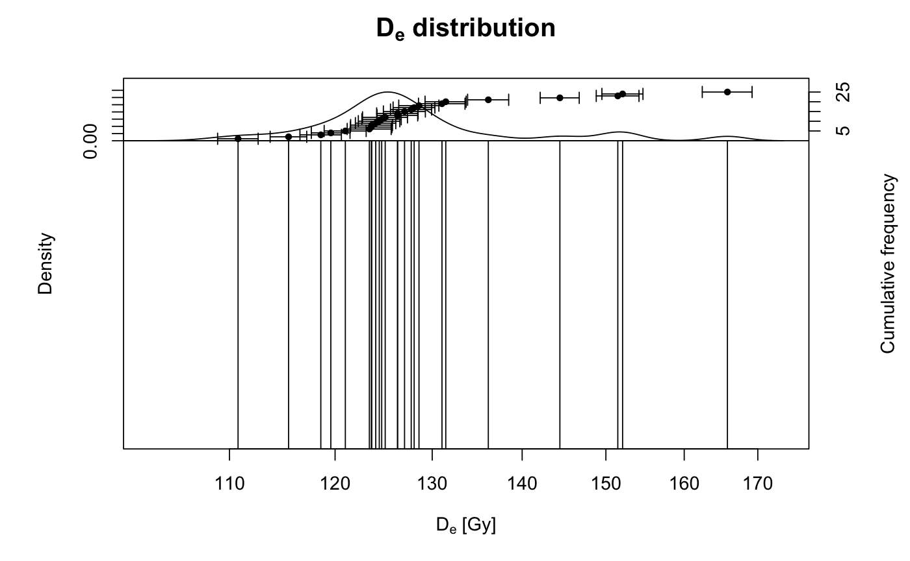
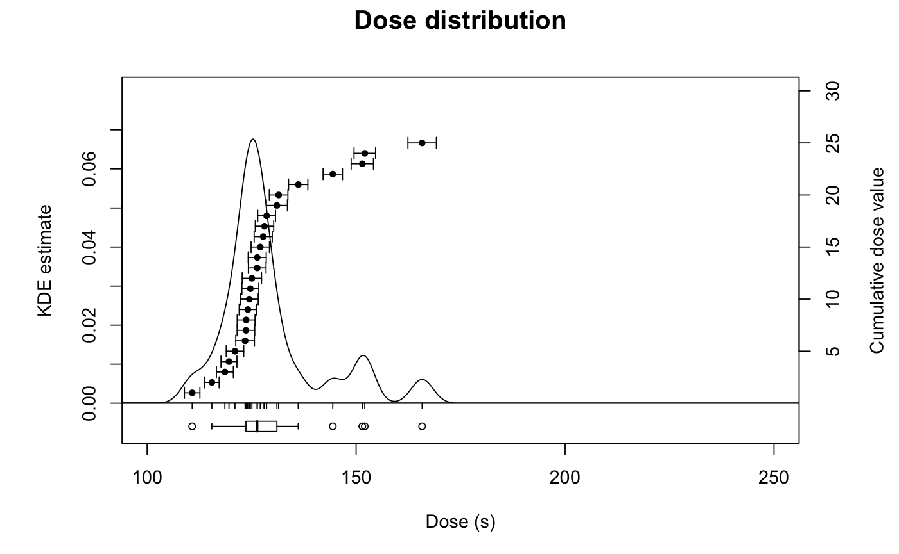
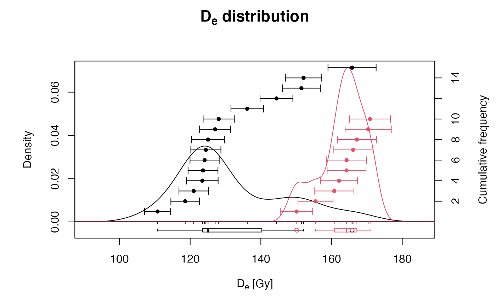
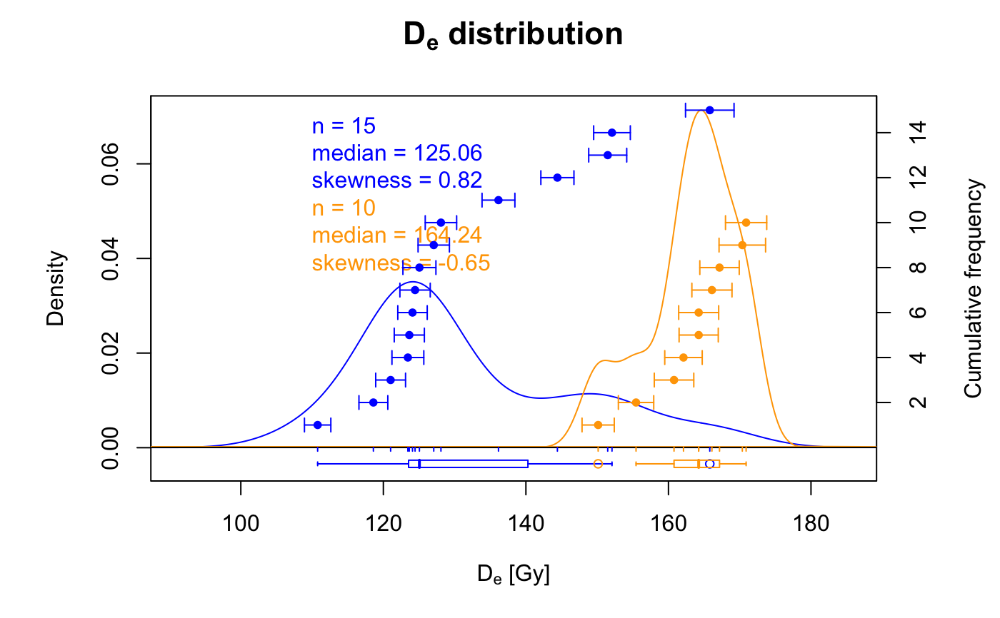

plot_KDE.RdPlot a kernel density estimate of measurement values in combination with the actual values and associated error bars in ascending order. If enabled, the boxplot will show the usual distribution parameters (median as bold line, box delimited by the first and third quartile, whiskers defined by the extremes and outliers shown as points) and also the mean and standard deviation as pale bold line and pale polygon, respectively.
plot_KDE(data, na.rm = TRUE, values.cumulative = TRUE, order = TRUE, boxplot = TRUE, rug = TRUE, summary, summary.pos, summary.method = "MCM", bw = "nrd0", output = TRUE, ...)
| data | data.frame or RLum.Results object (required):
for |
|---|---|
| na.rm | logical (with default): exclude NA values from the data set prior to any further operation. |
| values.cumulative | logical (with default): show cumulative individual data. |
| order | logical: Order data in ascending order. |
| boxplot | logical (with default): optionally show a boxplot (depicting median as thick central line, first and third quartile as box limits, whiskers denoting +/- 1.5 interquartile ranges and dots further outliers). |
| rug | logical (with default): optionally add rug. |
| summary | character (optional): add statistic measures of centrality and dispersion to the plot. Can be one or more of several keywords. See details for available keywords. |
| summary.pos | numeric or character (with default):
optional position coordinates or keyword (e.g. |
| summary.method | character (with default):
keyword indicating the method used to calculate the statistic summary.
One out of |
| bw | character (with default): bin-width, chose a numeric value for manual setting. |
| output | logical:
Optional output of numerical plot parameters. These can be useful to
reproduce similar plots. Default is |
| ... | further arguments and graphical parameters passed to plot. |
The function allows passing several plot arguments, such as main,
xlab, cex. However, as the figure is an overlay of two
separate plots, ylim must be specified in the order: c(ymin_axis1,
ymax_axis1, ymin_axis2, ymax_axis2) when using the cumulative values plot
option. See examples for some further explanations. For details on the
calculation of the bin-width (parameter bw) see
density.
A statistic summary, i.e. a collection of statistic measures of centrality and dispersion (and further measures) can be added by specifying one or more of the following keywords:
"n" (number of samples)
"mean" (mean De value)
"median" (median of the De values)
"sd.rel" (relative standard deviation in percent)
"sd.abs" (absolute standard deviation)
"se.rel" (relative standard error)
"se.abs" (absolute standard error)
"in.2s" (percent of samples in 2-sigma range)
"kurtosis" (kurtosis)
"skewness" (skewness)
Note that the input data for the statistic summary is sent to the function
calc_Statistics() depending on the log-option for the z-scale. If
"log.z = TRUE", the summary is based on the logarithms of the input
data. If "log.z = FALSE" the linearly scaled data is used.
Note as well, that "calc_Statistics()" calculates these statistic
measures in three different ways: unweighted, weighted and
MCM-based (i.e., based on Monte Carlo Methods). By default, the
MCM-based version is used. If you wish to use another method, indicate this
with the appropriate keyword using the argument summary.method.
The plot output is no 'probability density' plot (cf. the discussion of Berger and Galbraith in Ancient TL; see references)!
3.5.7
## read example data set data(ExampleData.DeValues, envir = environment()) ExampleData.DeValues <- Second2Gray(ExampleData.DeValues$BT998, c(0.0438,0.0019)) ## create plot straightforward plot_KDE(data = ExampleData.DeValues)## create plot with logarithmic x-axis plot_KDE(data = ExampleData.DeValues, log = "x")## create plot with user-defined labels and axes limits plot_KDE(data = ExampleData.DeValues, main = "Dose distribution", xlab = "Dose (s)", ylab = c("KDE estimate", "Cumulative dose value"), xlim = c(100, 250), ylim = c(0, 0.08, 0, 30))## create plot with boxplot option plot_KDE(data = ExampleData.DeValues, boxplot = TRUE)## create plot with statistical summary below header plot_KDE(data = ExampleData.DeValues, summary = c("n", "median", "skewness", "in.2s"))## create plot with statistical summary as legend plot_KDE(data = ExampleData.DeValues, summary = c("n", "mean", "sd.rel", "se.abs"), summary.pos = "topleft")## split data set into sub-groups, one is manipulated, and merge again data.1 <- ExampleData.DeValues[1:15,] data.2 <- ExampleData.DeValues[16:25,] * 1.3 data.3 <- list(data.1, data.2) ## create plot with two subsets straightforward plot_KDE(data = data.3)## create plot with two subsets and summary legend at user coordinates plot_KDE(data = data.3, summary = c("n", "median", "skewness"), summary.pos = c(110, 0.07), col = c("blue", "orange"))## example of how to use the numerical output of the function ## return plot output to draw a thicker KDE line KDE_out <- plot_KDE(data = ExampleData.DeValues, output = TRUE)